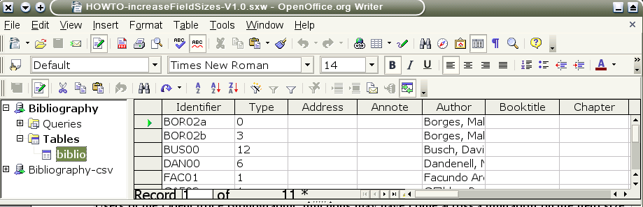
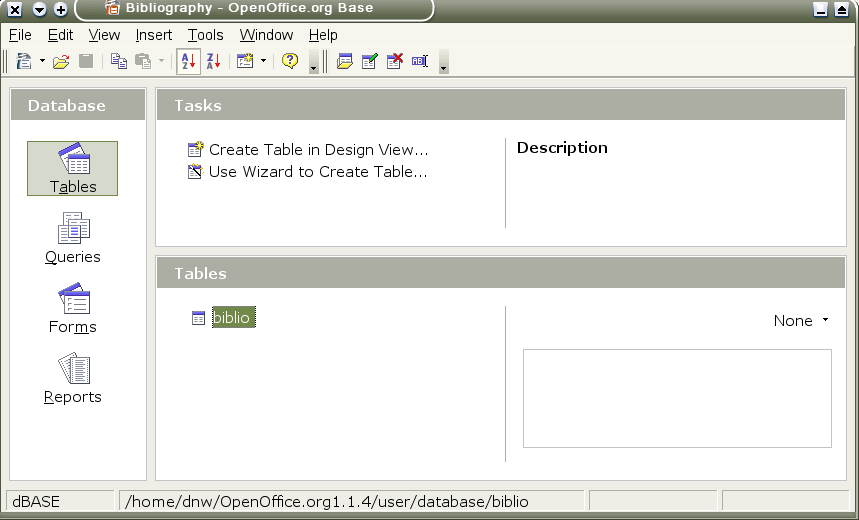
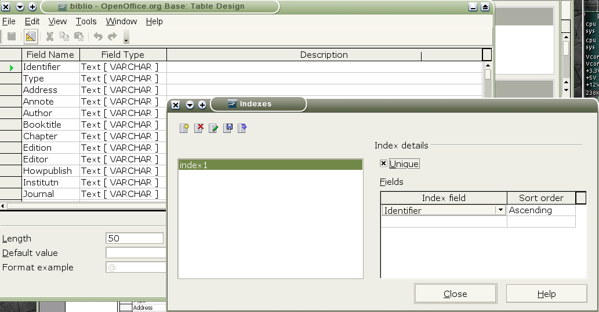

HOWTO Increase the Bibliographic Database Field Sizes
Version 2.0 By David Wilson www.bibliographic.openoffice.org dnw@openoffice.org
Users of the OpenOffice Bibliographic functions may have come across a limitation on the field size
Whist we work on a permanent fix for this. The user can increase the field size themselves.
There were some problems making these changes with early version of OpenOffice but I can confirm that this can be done with version OpenOffice.org1.1RC3 and later versions and OpenOffice.org2.X
Note: This procedure should not damage or lose data from the bibliographic database, but make sure you make a copy of it before you make these changes. Just in case.
You need to open the Bibliographic database using View->'Data Sources'.

Right click on 'Bibliography' Select the 'Administrate Data Sources' option.
Click on the 'Tables' tab, click on and highlight 'biblio', click on the 'edit table' icon.
This will bring up the the 'Database Management' panel (see screen image below)
Select the Tables option and right-click on biblio (shown highlighted above)
this brings up the 'Edit Table' Panel shown below.

Now for each Field you want to increase in size (eg Title, Author , Booktitle, Title, Journal, Annotation and Note, URL, etc) click on the Text(VARCHAR) description and select from the list Memo(LONGVARCHAR).
Whilst you are here, it is a good idea to make a unique index for 'identifier'. This will prevent two identifiers being the same. This causes problems – you will only be able to select the first of the record with the same identifier with the Insert>Indexes and tables>'Bibliographic Entry' panel, any others will be unselectable.
From the Edit Table panel select Tools>Index Design (see screen image below)

Click on the New Index icon (the first on the left) select identifier and 'unique' .
Close Index design
In 'Edit Table' File>Save All, Close Window.
Unload and Load the Data Sources – F4 F4.
You should now be able to past large blocks of text into your Notes or Annotate fields.
Page